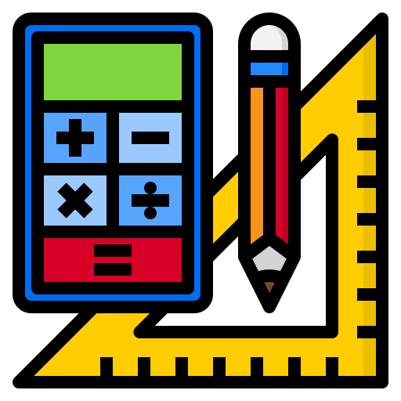

Numeros aleatorios
Eliga uno de nuestros servicios.

Metodo de los
Metodo de los
cuadrados medios
Los cuadrados medios representan una estimación
de la varianza de la población. Se calculan dividiendo la
suma correspondiente de los
cuadrados entre los grados de libertad.

Metodo de
congruencia lineal
Los generadores congruenciales lineales generan una secuencia de números pseudoaleatorios en la cual el próximo número pseudoaleatorio es determinado a partir del último número generado
Iniciar
Metodo
congruencial
multiplicativo
Un generador lineal congruencial es un algoritmo que permite obtener una secuencia de números pseudoaleatorios calculados con una función lineal definida a trozos discontinua. Es uno de los métodos más antiguos y conocidos para la generación de números pseudoaleatorios
Iniciar